Laticínio artesanal · Pirambóia/SP · desde 2017
Queijo feito com leite 100% A2A2
Leite de rebanho próprio no pé da Cuesta de Botucatu, manejo em pasto irrigado e produção artesanal em pequenos lotes. Do nosso sítio direto para sua mesa.
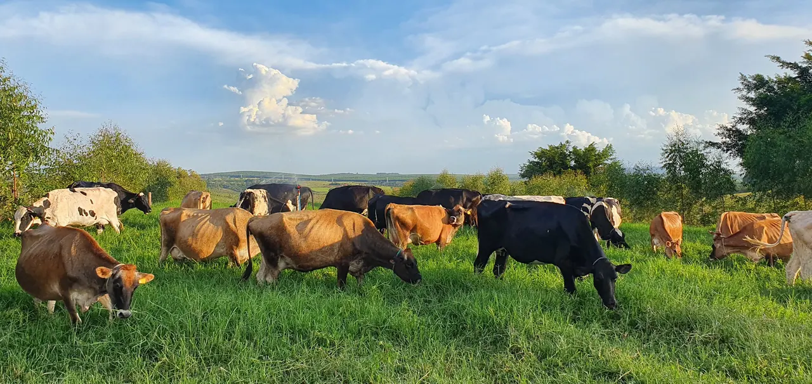
- Leite do próprio rebanho
- Pasto irrigado o ano inteiro
- Lotes pequenos, feitos à mão
- Inspeção SISP 1774
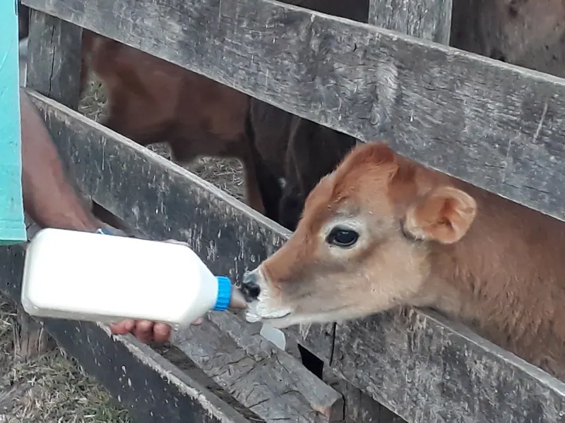
Nossa história
Um laticínio de família, desde 2017
Nossa origem
Em 2017, no pé da Cuesta de Botucatu, em Pirambóia/SP, nascia nosso laticínio. É nesse microclima privilegiado que mantemos nossa essência e onde cada produto continua sendo feito do início ao fim.
Quem faz acontecer
- Henrique
- Mestre da produção artesanal, responsável por elaborar e moldar cada peça à mão.
- Raquel
- Lidera a excelência do rebanho, cuidando da genética e da produção de embriões no próprio sítio.
- Raquel e Gustavo
- À frente do atendimento e da gestão comercial.
A inspiração no campo
A paisagem e a atmosfera da Cuesta inspiram nossas criações. O nome de cada queijo — Nascente, Poente, Remanso, Garoa, Brisa e Horizonte — traduz em sabor o clima do nosso terroir.
Rebanho 100% A2A2 e inspeção SISP — venda formal em todo o estado de São Paulo.
Do pasto à genética
O que significa A2A2
A2A2 é a forma natural da beta-caseína, principal proteína do leite. Nosso rebanho é 100% selecionado geneticamente para essa produção.
Importante: não é leite sem lactose.
-
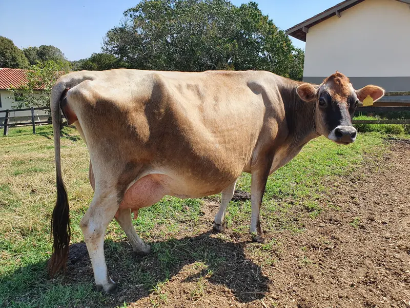
01 · Rebanho
100% A2A2, selecionado geneticamente.
-
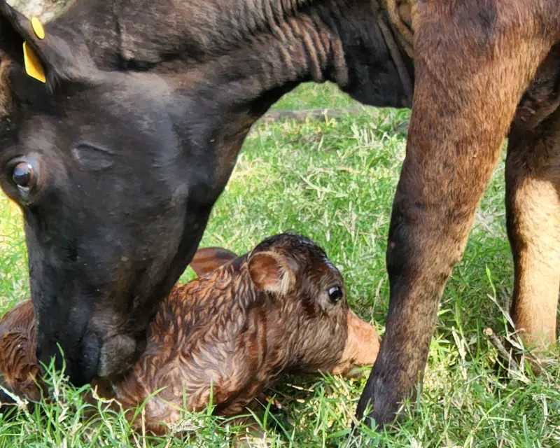
02 · Genética
Produção de embriões feita no próprio sítio.
-
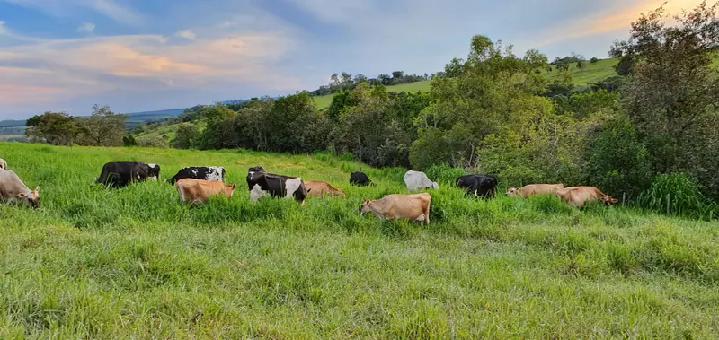
03 · Pasto
Verde e irrigado o ano inteiro.
Produtos
Nossos queijos artesanais, inspirados na paisagem da nossa terra
Queijos de leite A2A2 em constante maturação — do frescor leve às peças mais curadas. A cada semana, novos lotes ficam no ponto ideal. Chame no WhatsApp para saber o que temos pronto hoje.
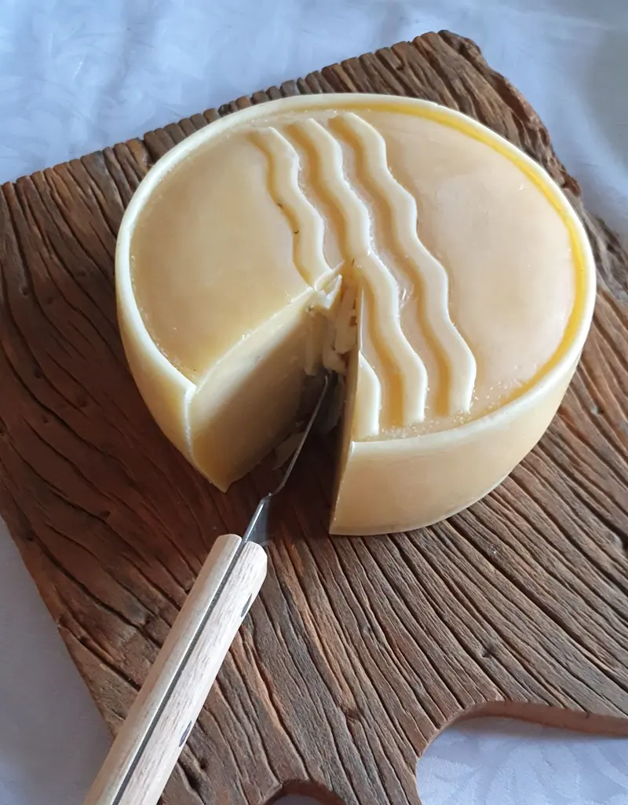
-
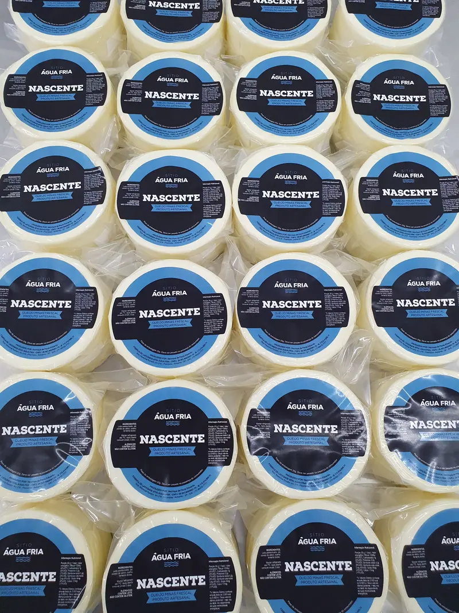
Nascente
Minas frescal
Pedir Nascente pelo WhatsApp -
Poente
Minas padrão
Pedir Poente pelo WhatsApp -
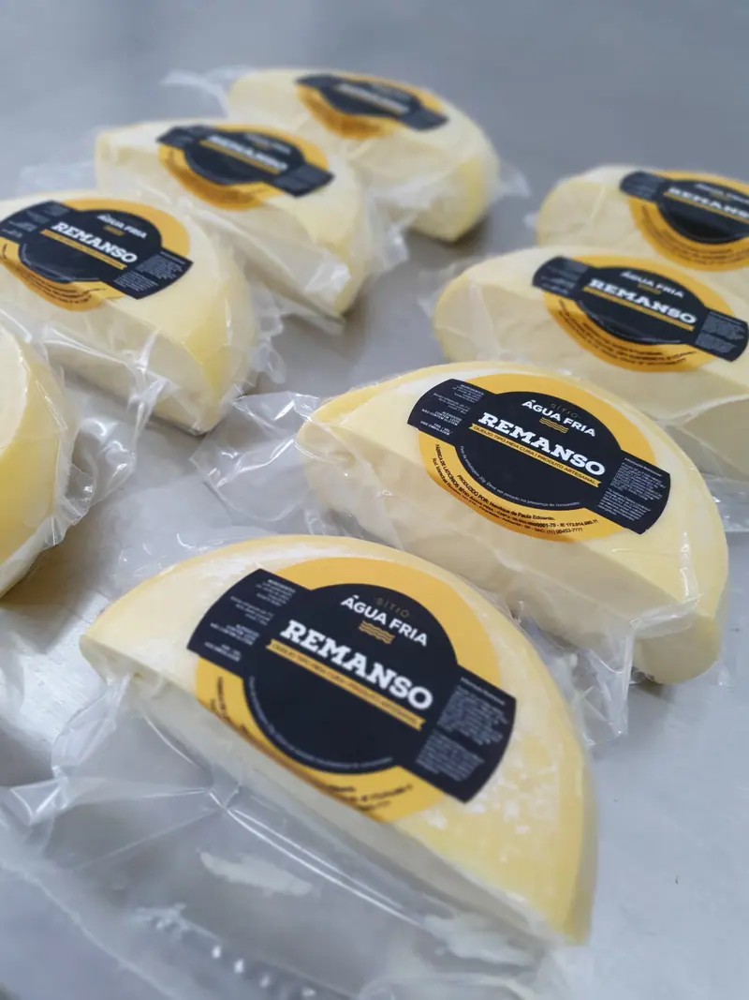
Remanso
Meia cura
Pedir Remanso pelo WhatsApp -
Garoa
Mussarela
Pedir Garoa pelo WhatsApp -
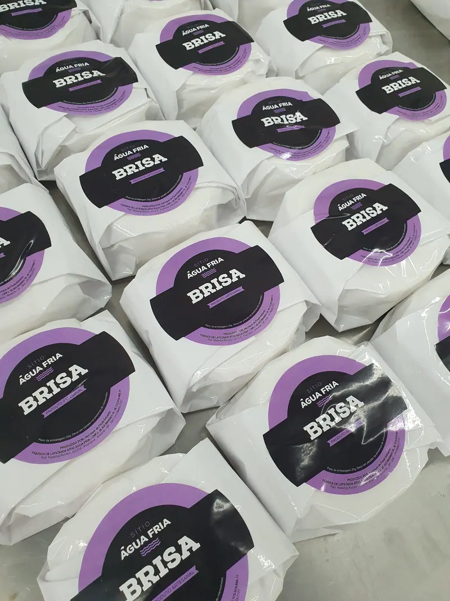
Brisa
Brie
Pedir Brisa pelo WhatsApp -
Horizontinho
Queijo artesanal
3 a 4 meses de maturação
Pedir Horizontinho pelo WhatsApp -
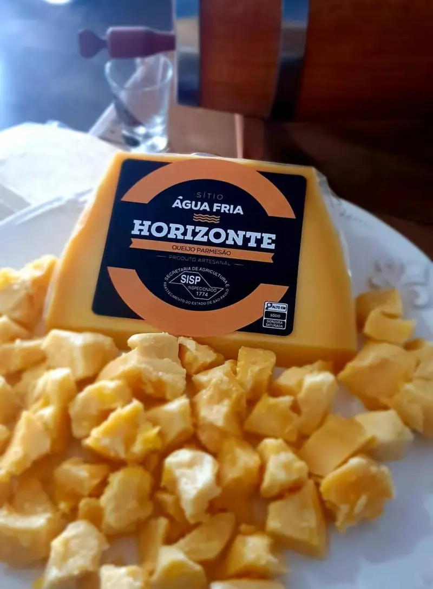
Horizonte
Tipo parmesão
10 a 12 meses de maturação
Pedir Horizonte pelo WhatsApp -
Coalho
Queijo coalho
Pedir Coalho pelo WhatsApp -
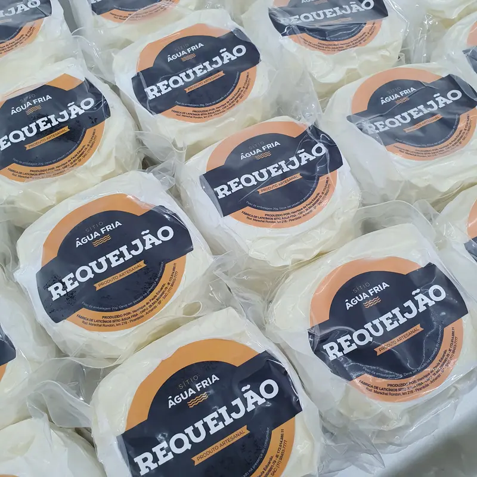
Requeijão
De corte
Pedir Requeijão pelo WhatsApp
Outros produtos
Também sai da nossa cozinha
-
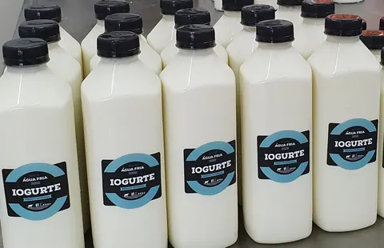
Pedir Iogurte natural pelo WhatsAppIogurte natural
500 ml e 1 L
-
Pedir Iogurte de morango pelo WhatsApp
Iogurte de morango
500 ml e 1 L
-
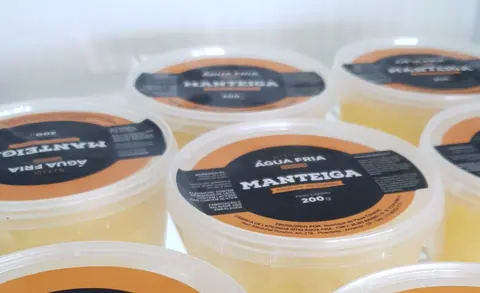
Pedir Manteiga pelo WhatsAppManteiga
200 g
-
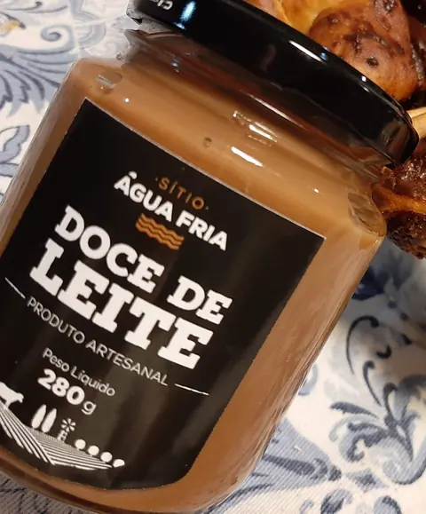
Pedir Doce de leite pelo WhatsAppDoce de leite
280 g e 400 g · feito com açúcar orgânico
-
Pedir Coalhada seca pelo WhatsApp
Coalhada seca
250 g
-
Pedir Creme de iogurte (sour cream) pelo WhatsApp
Creme de iogurte (sour cream) Novo
200 g
Locais de venda
Onde comprar
Os pedidos são feitos pelo WhatsApp. Você encontra nossos produtos nestes pontos:
Padaria parceira em Botucatu
Nossos queijos na prateleira, toda semana.
Piracicaba
Braço de vendas na cidade, com entrega combinada.
No próprio sítio
Rodovia Marechal Rondon, km 218 — Pirambóia/SP. Avise antes pelo WhatsApp para separarmos o pedido.
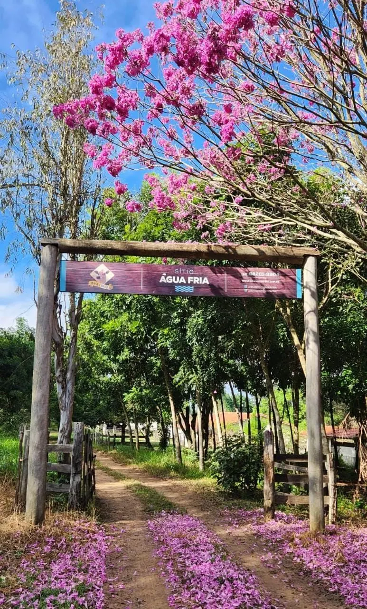
Visitas
Venha conhecer o sítio, com hora marcada
Recebemos visitas somente com agendamento. Combine o dia e o horário pelo WhatsApp antes de vir.
Contato
Faça seu pedido
Conte pra gente o que você procura. Teremos o maior prazer em separar seu pedido com o que há de mais fresco na semana.